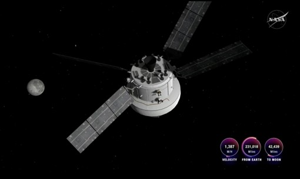

Mỹ – Iran đạt thỏa thuận về ngừng bắn, mở cửa eo biển Hormuz trong hai tuần
Mỹ và Iran đồng ý ngừng bắn trong hai tuần, Tehran sẽ cho phép tàu thuyền đi qua eo biển Hormuz trong thời gian này "với sự điều phối từ lực lượng vũ trăng".
Khoảng 0h41 ngày 6/4 (11h41 theo giờ Hà Nội), tàu vũ trụ Orion đưa phi hành đoàn Artemis II đi vào vùng ảnh hưởng lực hấp dẫn của Mặt Trăng. Tại đây, lực hấp dẫn Mặt Trăng tác động lên tàu vũ trụ Orion sẽ mạnh hơn lực hấp dẫn Trái Đất, trở thành lực chi phối kiểm soát quỹ đạo con tàu. Phi hành đoàn hoàn thành quá trình chuyển đổi này trong ngày thứ 5 của nhiệm vụ, khi cách Mặt Trăng khoảng 62.800 km và cách Trái Đất 373.400 km. Lần đầu tiên các phi hành gia đặt chân vào phạm vi ảnh hưởng của Mặt Trăng kể từ nhiệm vụ Apollo 17 năm 1972.
"Đây là cột mốc đáng chú ý trong nhiệm vụ của chúng ta", Rick Henfling, Giám đốc chuyến bay tại NASA, tuyên bố. Việc này cũng tạo tiền đề cho sự kiện quan trọng của đêm 6-7/4: phi hành đoàn bay vòng qua phía xa Mặt Trăng, tiến vào không gian xa hơn bất cứ người nào trong lịch sử. "Tất cả đều vô cùng hào hứng cho ngày mai. Nhóm vận hành chuyến bay và nhóm khoa học đều đã sẵn sàng bay ngang qua Mặt Trăng đầu tiên sau hơn 50 năm", Lori Glaze, phó quản lý phụ trách Chương trình Phát triển Hệ thống Thám hiểm của NASA, cho biết.
Trước đó, nhóm điều khiển nhiệm vụ tại Houston và phi hành đoàn Artemis II hoàn thành một lần đốt động cơ để điều chỉnh quỹ đạo của Orion hướng tới Mặt Trăng. Quá trình khai hỏa bắt đầu lúc 23h03 ngày 5/4 (10h03 ngày 6/4 giờ Hà Nội), kéo dài 17,5 giây. Cũng trong ngày thứ 5 của chuyến bay, các phi hành gia hoàn thành một mục tiêu quan trọng là thử nghiệm bộ đồ Hệ thống Sinh tồn Phi hành đoàn Orion (OCSS). Cả bốn đã thực hiện đầy đủ bài kiểm tra gồm mặc và điều áp bộ đồ, kiểm tra rò rỉ, mô phỏng việc vào ghế ngồi, đánh giá khả năng vận động, ăn uống. Bộ đồ nhằm mục đích bảo vệ phi hành gia trong những giai đoạn biến động của chuyến bay, hỗ trợ sự sống khi giảm áp suất khoang lái và hạ cánh xuống biển.

Tàu Orion rời bệ phóng tối 1/4 (5h35 ngày 2/4 giờ Hà Nội) đưa bốn phi hành gia bay tới Mặt Trăng, sứ mệnh có người lái đầu tiên của NASA vượt ra ngoài quỹ đạo Trái Đất tầm thấp sau 54 năm. Phi hành đoàn gồm chỉ huy nhiệm vụ Reid Wiseman (NASA), phi công Victor Glover (NASA), chuyên gia nhiệm vụ Christina Koch (NASA) và chuyên gia nhiệm vụ Jeremy Hansen (Cơ quan Vũ trụ Canada CSA).
Nhiệm vụ Artemis II đánh dấu hàng loạt cột mốc trong ngành hàng không vũ trụ. Ví dụ, phi hành gia da màu, người phụ nữ, người không phải công dân Mỹ đầu tiên, phi hành gia lớn tuổi nhất đến Mặt Trăng. Ngoài ra, phi hành đoàn còn dự kiến lập kỷ lục bay xa Trái Đất nhất (402.000 km) và tốc độ tái nhập khí quyển nhanh nhất (40.200 km/h) trong lịch sử du hành vũ trụ. Bên cạnh đó, đây là chuyến bay có người lái đầu tiên của tên lửa Hệ thống Phóng Không gian (SLS) và tàu Orion. Rất nhiều công nghệ thử nghiệm trên tàu cũng lần đầu được sử dụng ngoài không gian như Hệ thống Liên lạc Quang học Orion Artemis II, sử dụng tia laser để gửi và nhận dữ liệu từ Trái Đất. Ngoài ra, tàu cũng trang bị nhà vệ sinh hoạt động đầy đủ đầu tiên trong chuyến bay tới Mặt Trăng.

Mỹ và Iran đồng ý ngừng bắn trong hai tuần, Tehran sẽ cho phép tàu thuyền đi qua eo biển Hormuz trong thời gian này "với sự điều phối từ lực lượng vũ trăng".

Người dân Iran tập trung trên đường phố Tehran, vậy có và hô khẩu hiệu sau khi lệnh ngừng bắn hai tuần với Mỹ được công bố.

Nằm ở bộ nam eo biển Hormuz, cách Iran gần 34 km, bán đảo Musandam của Oman đang chứng kiến những hệ lụy về kinh tế và đời sống khi xung đột bùng phát.